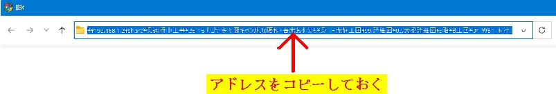

![正光ロゴ]()
TDFファイルを選択、またはこの画面にドラッグ&ドロップしてください
該当ファイルがあるフォルダ絶対パスを事前コピー必要
フォルダパスを起点に図番にハイパーリンクが付与されます。
※ファイル選択時のアドレスをコピーする
フォルダパスを起点に図番にハイパーリンクが付与されます。
※ファイル選択時のアドレスをコピーする

複数のダウンロードファイルの結合
Excelを追加すると、ファイルごとの製品行数が下に表示されます。
| 集計 | ファイル名 | 工事番号 | 製品行数 | 図番 | 確認 |
|---|
帳票チェックExcelのサイズ・長さ・本数・継手を、最新の詳細図と照合します
現場フォルダ(①進行中工事)
⚠ 「不一致」でも、Excelが間違いとは限りません。アプリが図面を読み違えることがあります。実寸法師で図面を確認してください。
図面にあってExcelに無い製品(Excelに載っている図面の中だけ)
| 図番 | 製品マーク(図面) | サイズ | 長さ(m) | 本数 | 図面の更新日 |
|---|
| ID | 図番 | 製品マーク | 設計符号 | サイズ | 本数 | 長さ(m) | 重量(t) | 左継手 | 右継手 |
|---|